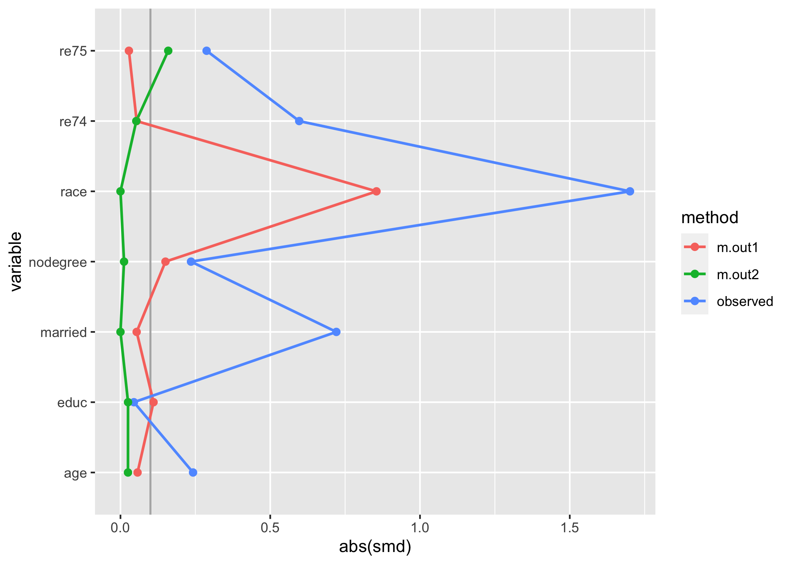

Note: tidysmd has been subsumed under the halfmoon package; all the functions in this package are re-exported in halfmoon. While tidysmd will remain on CRAN, we recommend using the halfmoon package instead
The goal of tidysmd is to easily create tidy data frames of SMDs. tidysmd wraps the smd package to easily calculate SMDs across many variables and using several weights in order to easily compare different adjustment strategies.
Installation
You can install the most recent version of tidysmd from CRAN with:
install.packages("tidysmd")Alternatively, you can install the development version of tidysmd from GitHub with:
# install.packages("devtools")
devtools::install_github("malcolmbarrett/tidysmd")Example: Weighting
tidy_smd() supports both unweighted SMDs and weighted SMDs.
library(tidysmd)
tidy_smd(nhefs_weights, c(age, education, race), .group = qsmk)
#> # A tibble: 3 × 4
#> variable method qsmk smd
#> <chr> <chr> <chr> <dbl>
#> 1 age observed 1 -0.282
#> 2 education observed 1 0.196
#> 3 race observed 1 0.177nhefs_weights contains several types of propensity score weights for which we can calculate SMDs. Unweighted SMDs are also included by default.
tidy_smd(
nhefs_weights,
c(age, race, education),
.group = qsmk,
.wts = c(w_ate, w_att, w_atm)
)
#> # A tibble: 12 × 4
#> variable method qsmk smd
#> <chr> <chr> <chr> <dbl>
#> 1 age observed 1 -0.282
#> 2 race observed 1 0.177
#> 3 education observed 1 0.196
#> 4 age w_ate 1 -0.00585
#> 5 race w_ate 1 0.00664
#> 6 education w_ate 1 0.0347
#> 7 age w_att 1 -0.0120
#> 8 race w_att 1 0.00365
#> 9 education w_att 1 0.0267
#> 10 age w_atm 1 -0.00184
#> 11 race w_atm 1 0.00113
#> 12 education w_atm 1 0.00934Having SMDs in a tidy format makes it easy to work with the estimates, for instance in creating Love plots. tidysmd includes geom_love() to make this a bit easier:
library(ggplot2)
plot_df <- tidy_smd(
nhefs_weights,
race:active,
.group = qsmk,
.wts = starts_with("w_")
)
ggplot(
plot_df,
aes(
x = abs(smd),
y = variable,
group = method,
color = method,
fill = method
)
) +
geom_love()
You can also use the quick-plotting function love_plot(), if you prefer:
love_plot(plot_df) +
theme_minimal(14) +
ylab(NULL)
Example: Matching
tidysmd also has support for working with matched datasets. Consider these two objects from the MatchIt documentation:
library(MatchIt)
# Default: 1:1 NN PS matching w/o replacement
m.out1 <- matchit(treat ~ age + educ + race + nodegree +
married + re74 + re75, data = lalonde)
# 1:1 NN Mahalanobis distance matching w/ replacement and
# exact matching on married and race
m.out2 <- matchit(treat ~ age + educ + race + nodegree +
married + re74 + re75, data = lalonde,
distance = "mahalanobis", replace = TRUE,
exact = ~ married + race)One option is to just look at the matched dataset with tidysmd:
matched_data <- get_matches(m.out1)
match_smd <- tidy_smd(
matched_data,
c(age, educ, race, nodegree, married, re74, re75),
.group = treat
)
love_plot(match_smd)
The downside here is that you can’t compare multiple matching strategies to the observed dataset; the label on the plot is also wrong. tidysmd comes with a helper function, bind_matches(), that creates a dataset more appropriate for this task:
matches <- bind_matches(lalonde, m.out1, m.out2)
head(matches)
#> treat age educ race married nodegree re74 re75 re78 m.out1 m.out2
#> NSW1 1 37 11 black 1 1 0 0 9930.0460 1 1
#> NSW2 1 22 9 hispan 0 1 0 0 3595.8940 1 1
#> NSW3 1 30 12 black 0 0 0 0 24909.4500 1 1
#> NSW4 1 27 11 black 0 1 0 0 7506.1460 1 1
#> NSW5 1 33 8 black 0 1 0 0 289.7899 1 1
#> NSW6 1 22 9 black 0 1 0 0 4056.4940 1 1matches includes an binary variable for each matchit object which indicates if the row was included in the match or not. Since downweighting to 0 is equivalent to filtering the datasets to the matches, we can more easily compare multiple matched datasets with .wts:
many_matched_smds <- tidy_smd(
matches,
c(age, educ, race, nodegree, married, re74, re75),
.group = treat,
.wts = c(m.out1, m.out2)
)
love_plot(many_matched_smds)